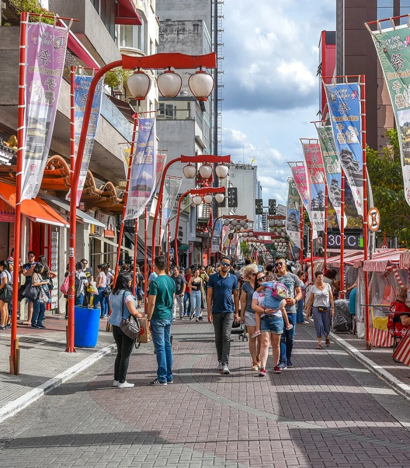

UM OLHAR AFETIVO SOBRE SÃO PAULO
Uma cidade.
Infinitas camadas.
Entre o concreto e o verde, o primeiro café e a última conversa. Descubra os pequenos mundos que fazem São Paulo ser casa.
Encontre a sua São Paulo ↗23°33′ S 46°38′ O · BRASIL

dentro de uma só ↗
01 / EXPLORE NO SEU RITMO
Por qual camada
vamos começar?
Escolha um olhar. Abra uma história.
Guarde três lugares no seu cartão.
Curadoria inicial para o protótipo. Fotografias: Wikimedia Commons. Consulte os créditos e licenças abaixo.
02 / LEVE UM PEDACINHO DA CIDADE
A sua São Paulo
vira cartão-postal.
Três lugares, uma lembrança. Escolha seus favoritos acima e escreva uma frase para guardar esse encontro.
SÃO PAULO
em camadas
Seu jeito de olhar.
♡
CADA OLHAR CONTA UMA HISTÓRIA
São Paulo também é
o que a gente sente.
Este projeto começa com vinte convites para olhar a cidade com calma. A próxima camada é pessoal: suas fotos, suas memórias e os lugares que fazem você se sentir em casa.